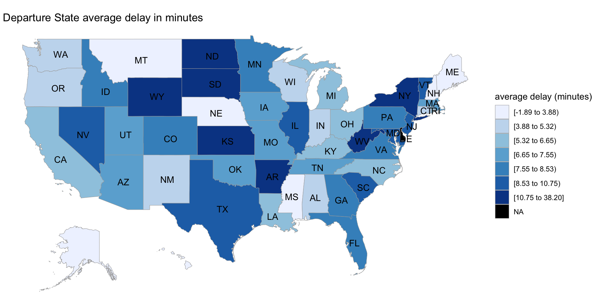
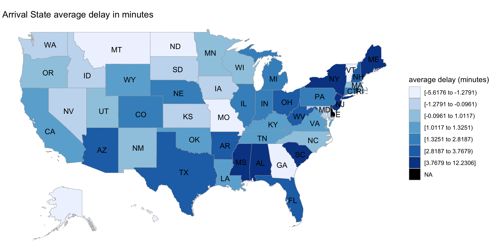
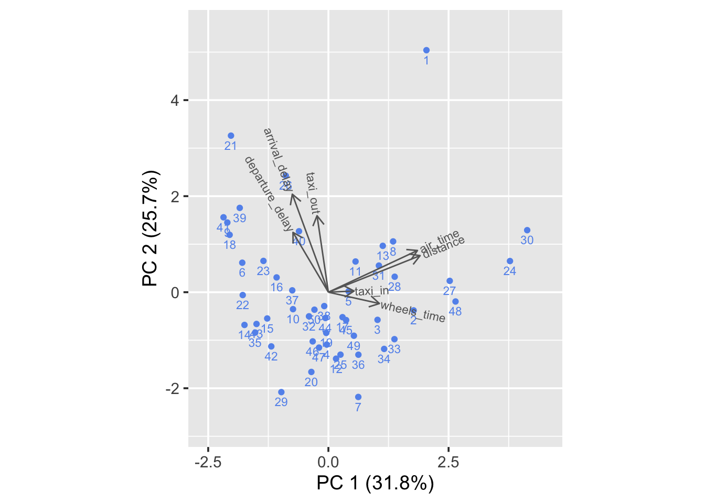
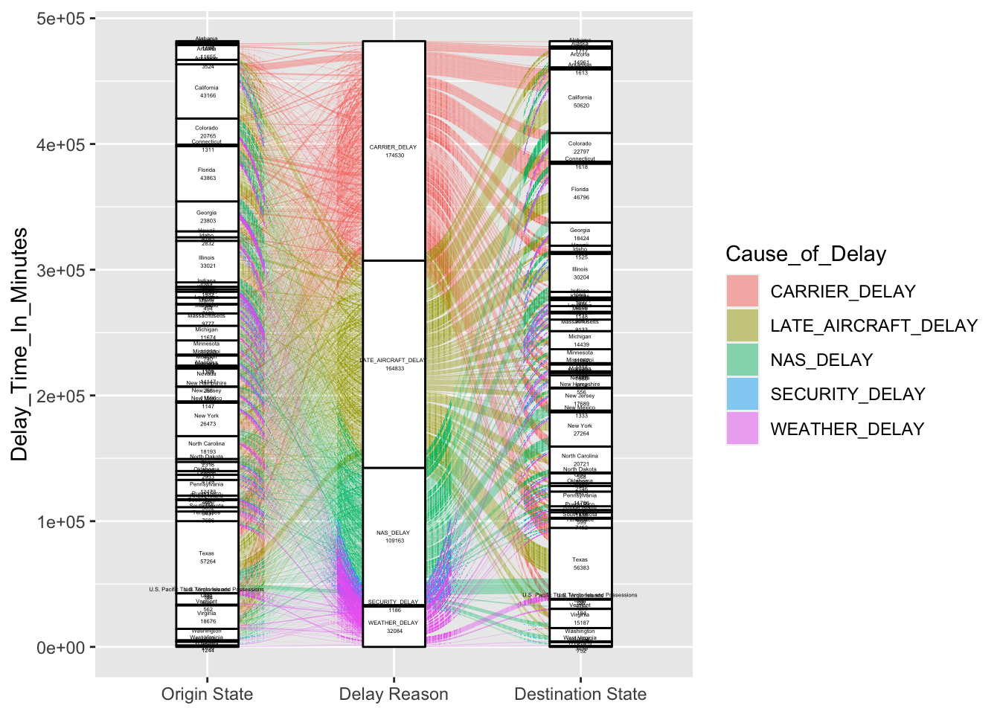
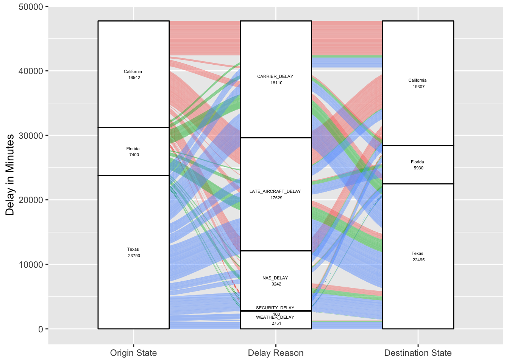
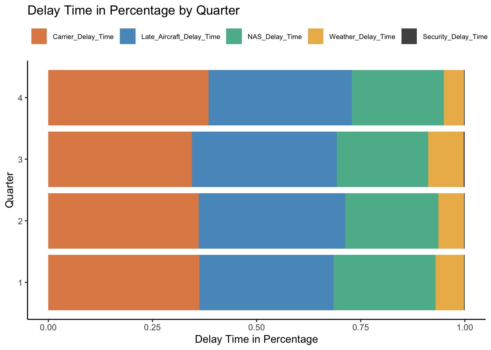

Chapter 4 Results
We want to first have a general idea of what elements would possibly influence the airplane to delay, based on the data we have. The elements we investigate below are different airlines, quarters of a year, and departure/arrival states.
4.1 Exploratory data analysis on whether flights delay or not
Since we want to investigate the general trend of delay correlated with different time of a year (quarters) and different airlines, here we pick the top 5 airlines that appear most during 2018-2021 in our data set. They are AA (American Airlines), DL (Delta Air Lines), OO (SkyWest Airlines), UA ( United Air Lines), WN (Southwest Airlines). Below the mosaic plot shows the relationship between arrival delay or not, the 5 airlines and quarters.

From the plot we may see that for the 5 airlines with most flights in our data set, the third quarter has the highest proportion of delay. Except for Southwest Airlines, the other four airlines show apparent increase in delay in the third quarter. This could be caused by extreme weather like Thunderstorms, which most likely to happen in summer, according to National Weather Service.
Next, let’s look at how departure states affects departure delay. Below the map visualize the average departure delay minutes for every flight departs from some state.

Similarly, we visualize the average arrival delay minutes for every flight arrive some state. 
We may notice that flights both from and to north eastern parts of the US like New York are most likely to delay. As for the states that flights depart, the middle parts and north eastern parts of the US are more likely to delay. For the states that flights arrive, both the southern part and north eastern part are more likely to delay.
4.2 Exploratory data analysis on flights’ delay time:
This section focuses on the flights’ delay time. We want to visualize some relationship between a flight’s delay time and factors like the airline this flight belong to, the time in terms of month, quarter, or year this flight departures at, and this flight’s departure performance.
Heat map for average delay time of different airline company and different quarters in year:
The first plot will be a heat map with x-axis being different airlines and y-axis being different in years. Then each rectangle in the plot represents the average delay time of the flights belong to this airline company at this quarter in year.
We use the unique carrier code for each airline company since that’s the data provided by BTS. Then we will refer those code to their corresponding airline company when analyze the result.
The reason we pick quarter in year to be our y-axis is that we believe the delay time is likely related to the whether condition, and the whether condition tends to vary quarter by quarter.
After quick explore of the data, we found that the average delay time has range from -5 to 15, and we decided to use color blue to represent -5 and color red to represent 15. Notice that a negative number of delay time of a flight means it arrived earlier.
For better visualization, we also decided to present the average delay time as a number in each rectangular.
There are four noticeable results appeared on the heat map above:
1. The airline company VX(Virgin America) only has the flights on the first quarter of each year, which is from January to March.
2. The top3 performance in terms of average delay time are: 1.AS(Alaska Airline) on the second quarter with arrive 5.6 minutes earlier on average. 2.YX(Republic Airline) on the second quarter with arrive 4.3 minutes earlier on average. 3.9E(Endeavor Air) on the second quarter with arrive 4.1 minutes earlier on average.
3. The worst3 performance in terms of average delay time are: 1.YV(Mesa Airline) on the fourth quarter with arrive 16 minutes late on average. 2.F9(Frontier Airline) on the third quarter with arrive 14.3 minutes late on average. 3.G4(Allegiant Air) on the third quarter with arrive 13.8 minutes late on average.
4. The first quarter and the second quarter tend to have color more blue, while the third quarter and the fourth quarter tend to have color more red. Combine with the result2 that all top3 happened on the second quarter and the result3 that all worst3 happened on either the third quarter or the fourth quarter. It seems like flights tend to delay more on the second half of a year.
Ridge line plots for average delay time of best airline company and different quarters in year:
The heat map above tells us the flights’ average delay time of different airline company in different quarters of a year. Thus we can easily pick the best airline company in a given quarter in terms of the average delay time. However, we believe that the distribution of delay time is also important, and can in fact provide additional useful information for us. For example, if two airline company have the same average delay time, but one is more spread out than another. Then this one will be consider a little bit worse than the another one.
We decide to use ridge line to present the distribution of delay time of different airline company in different quarters of year. Since we have 19 different airline company, and put them all together in one ridge plot makes the plot too big to visualize, we decided to choose two airline company that performed the best in terms of delay time in each quarter. Also, for better visualization, we removed all outliers since there are few outliers for each airline that doesn’t really affect the distribution but are much larger than other numbers.
For the first quarter, airline company 9E(Endeavor Air) seems to perform the best with most of delay time below 0 and center around -12. That means if one travel decides to pick Endeavor Air at first quarter, then he/she is likely to arrive earlier than expected.
For the second quarter, although airline company AS(Alaska Airline) has lower average delay time than 9E(Endeavor Air) in heat map, 9E(Endeavor Air) seems to have better performance showed by ridge line.
For the third quarter, airline company QX(Horizon Air) seems to perform the best with the most of delay time center around -10. This result is aligned with heat map.
For the fourth quarter, airline company 9E(Endeavor Air) again seems to perform the best with the distribution tends to normal with mean around -11. Although 9E(Endeavor Air) doesn’t have the lowest average delay time in heat map, it distribution showed by ridge line is the best.
biplot for correlation of arrival delay time and other continuous variables:
Next let’s look into the relationship between arrival delay in minutes and flight distances, Air Time, departure delay in minutes, difference between Wheels on time (time that an aircraft crosses a certain point (landing or metering fix)) and Wheels off time (time that an aircraft lifts off from the origin airport), and Taxi out time (difference between Actual Wheels Off time and Actual Gate Out time, in minutes) and Taxi in Time (difference between Actual Gate In time and Actual Wheels On time, in minutes).

Here we first select a subset of data containing variables mentioned above and then standardize all subset data so that each column has a mean if 0 and variance of 1. Then we randomly draw fifty rows from the subset to generate the biplot above.
We can see that arrival delay is highly correlated with departure delay, which is expected as if a flight is delayed for departure, then it is also likely to delay for arrival, given the distance is fixed. It is noticeable that arrival delay is also highly correlated with taxi out time (The time an aircraft takes off - The time an aircraft departed from the gate). This is also reasonable as departure time is indeed the time that the aircraft departed from the gate, thus the longer the taxi out time, the latter the aircraft actually takes off.
It is also noticeable that wheel time is slightly negatively correlated with arrival delay and distance and air time are nearly uncorrelated with arrival delay time. That suggests that the distance and flight time are not correlated with delay. Also, the slight negative correlation between wheel time and arrival delay time suggest the longer the difference of take off and land time, the less the arrival delay time. It usually happens that aircraft arrive early for Long-haul flights, as expected flight time is usually overstated for unexpected circumstances that may delay the flight during the long journey. Thus the general trend is that flight distance and flight time isn’t correlated with arrival delay.
4.3 Exploratory data analysis on flights’ delay reason:
This section focuses on the flights’ delay reason We want to visualize relationships between the cause of delay and other flights information, like flight origins, destinations and the quarter of the flights.
Alluvial Plot for Delay Reason, Origin and Destination
We first want to know if different delay reason dominates in different origins and destinations, so we drew an alluvial plot between orgin state, delay reason, and destination state to check.

We found including every state makes the plot too dense to gain any findings, so we tried to find the top three states among the orgins and destinations and replot with only airlines between these states.

From the new alluvial plot, we find most delayed airlines are caused by carrier and late aircraft delay, and Texas has largest quantity of delayed airlines.
Checking by origin state, carrier delay and late aircraft delay dominates in flights departured from California and Florida, while the delayed flights departured from Texas has various reasons. Looking into destination states, delayed airlines in these three states all have different causes while carrier delay still dominates in California, late aircraft delay dominates in Florida, and most NAS delay airlines lands in Texas.
Stacked Bar Plot for Delay Reason and Flight Time in Quarter
Next, we want to find if the delay reason varies in quarters, and we will make a stacked bar plot to check.

From the stacked bar plot, we found the delay time caused by security is the shortest and most delays are caused by carrier and late aircraft.
And in the fourth quarter, carrier causes even longer delay time than other quarters, we think this may because during winter, low temperature will raise the aircraft damage risk and takes longer time to check and fix, and therefore makes longer delay time.
And we found in the first quarter, the NAS delay time is much longer, and we think this may because during the first quarter, many people may just return work after Christmas and new year holiday, so there may be heavy traffic volume.
We also found in the third quarter, weather causes longer delay time than other quarters, we think this is related to the frequent storm and fog during the third quarter.